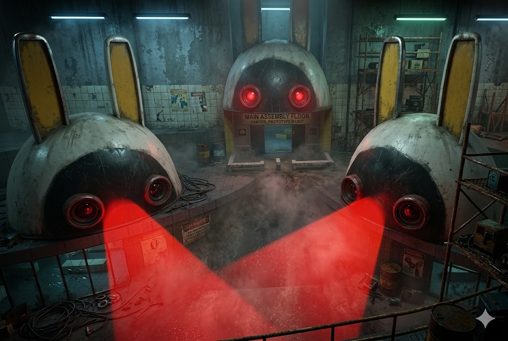
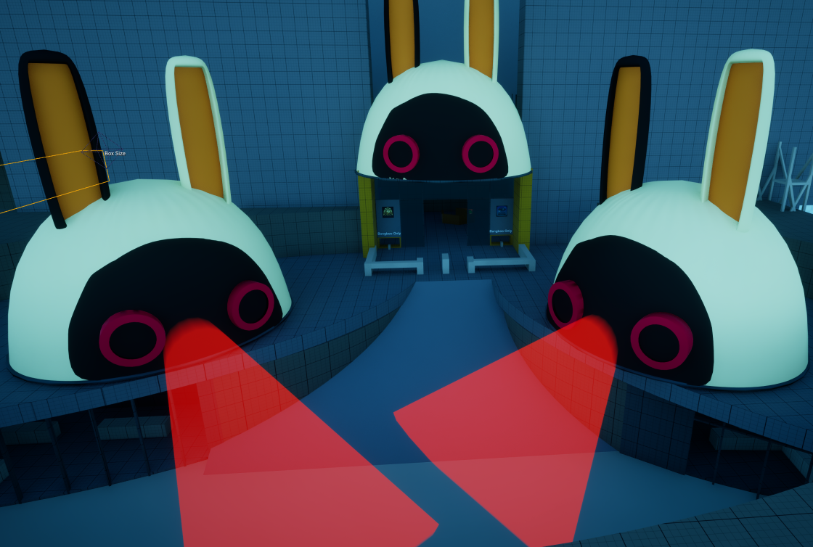
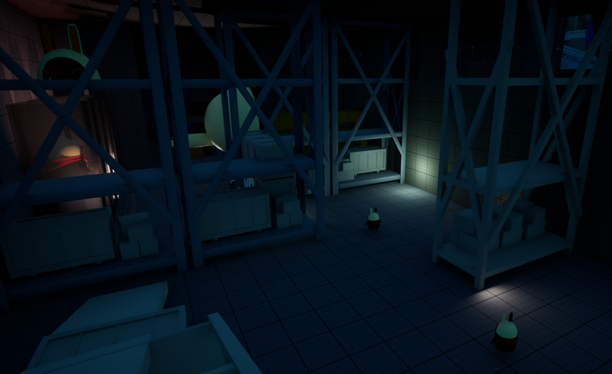
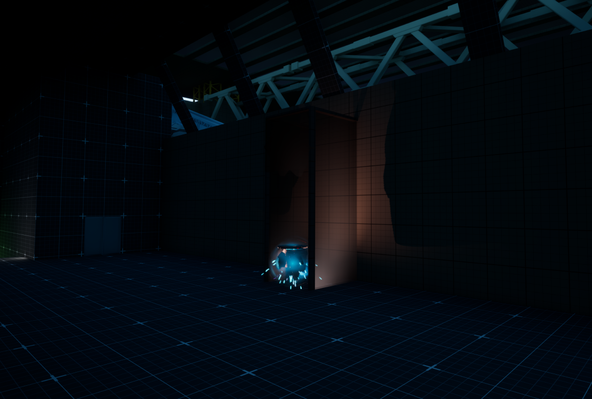
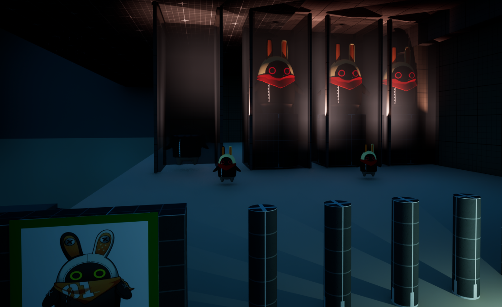
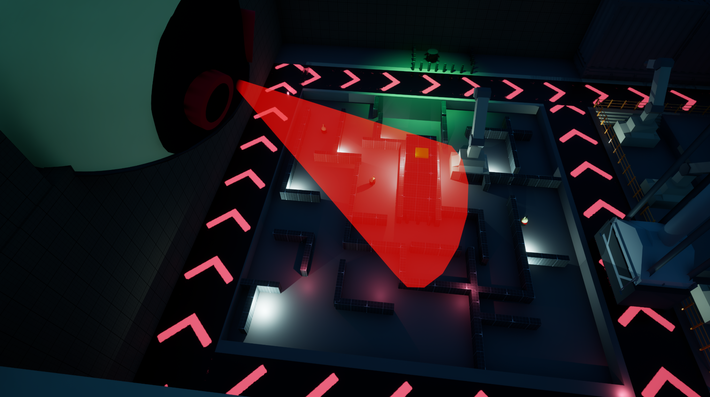

34号制造厂 - UE5白盒关卡展示
[DOC.01: LEVEL_DESIGN]
个人作品：34号制造厂
项目名称
异化法则：34号制造厂
设计基调
以"视线与移动管理"为核心的极简3C。结合粗野主义建筑与超现实奇观（巨型扭蛋机），营造新怪谭风格且带有黑色幽默的类怪谈体验。
引擎平台
UE5
[SEC.01: CHARACTER_DESIGN]
一、角色设定与能力设计
主角设定为没有任何战斗能力的普通人，解谜与生存完全依赖于对环境规则的理解、利用。
- 角色名称：调查员
- 身份背景：超自然现象应对局干员，被派往废弃的邦布工厂调查异常能量波动。
-
玩家能力（3C）：
- 基础移动 (WASD & Mouse)：步行、视角转动。
- 姿态切换 (Ctrl/C & Space)：下蹲、跳跃/攀爬
- 基础交互 (E)：拾取关键道具（高维计算单元）、按下场景开关/电闸。
- 核心生存逻辑：玩家必须通过特定的行为操作（如保持绝对静止、维持目光锁定）来欺骗工厂的安保系统，让自己"伪装"成一个没有生命特征的合规玩具。
[SEC.02: LEVEL_THEME]
二、关卡主题与设定背景
- 场景定位：深埋地下的粗野主义混凝土设施。原本是高度自动化的无人工厂，现已被扭曲的认知实体占据。
-
剧情概述：
工厂的主控AI逻辑发生神性异化，确立了"人类是残次品，无生命的邦布玩具才是完美"的绝对准则。工厂的安保协议随之扭曲，开始无差别抹杀所有"具有生命特征（乱动、视线躲闪、跳跃）"的实体。主角苏醒在残次品销毁车间，在各种奇怪的标语中，探索其中的隐秘。
-
主题关键词：
粗野主义 / 规则怪谈 / 黑色幽默 / 巨型物奇观 / 视线博弈
[SEC.03: GAMEPLAY_MECHANICS]
三、玩法机制详解
怪物设计聚焦于"心理博弈与微操压迫"。
1. 实体 C：【橱窗展示品】（视线博弈机制）
- 视觉特征：没有头的无头邦布。
- 机制描述：极度渴望被注视的扭曲实体。当玩家的视线对准它，且无墙体遮挡时，它被强制锚定进入绝对静止状态；一旦玩家背对它，或视线被掩体挡住，在一定范围内它将以极高的速度逼近玩家，一触即死。
- 压力类型：空间与时间压迫。强制玩家倒退行走，在视野受限的情况下摸黑寻路，或利用肉身作为诱饵进行拉扯。
2. 实体 B：【绝对质检仪】（动静博弈机制）
- 视觉特征：巨大的邦布头，投射出致命的红光。
- 机制描述：巨大的固定或缓慢巡逻的扫描设备。它会周期性发出预警，随后投射出红色扇形扫描光锥。
- 判定条件：当玩家处于红光范围内时，若系统检测到玩家有任何位移输入（速度检测），立刻判定为"活物次品"，触发处决。玩家必须完全保持静止。
- 压力类型：节奏打断与心理博弈。强制剥夺玩家的移动权，打破常规的跑图心流。
3. 实体 A：【基础清理程序】（距离追击机制）
- 视觉特征：红色双眼的邦布。
- 机制描述：游荡的安保邦布。当玩家进入其警戒半径，即触发高速追击。
- 压力类型：持续的占位威胁。提供基线压力，驱赶玩家，使其无法在安全区长时间停留。
[SEC.04: LEVEL_STRUCTURE]
四、关卡结构与流程设计
关卡采用 "线性引入 -> Hub枢纽分发 -> 垂直/平面综合考验 -> 高潮反转" 的流线设计。
1. 初始教学区：废弃运输通道（WASD/蹲/跳教学）
- 场景设计：玩家在缓慢倒退的传送带上醒来。通过环境涂鸦与企业标语的碰撞，完成无UI的基础教学。
- 高点揭示（Vantage Point）：传送带尽头被一台铲车和大量货物堵死。玩家违背规则（跳跃攀爬）站上铲车顶部，豁然开朗，俯视巨大的工厂广场，看到巨大的实体B（邦布头）正在用红光扫射广场，建立终极压迫感与"红灯停"的潜意识。
2. 核心区：前台与质检中枢 (Hub) -> 获取 Token01
- 前台大厅：玩家穿过广场进入大厅。操作前台触发AI迎宾广播（"谁想成为今天被抽到的扭蛋呀~"）。
- 视觉奇观与闭环教学：大厅中央矗立着数十米高的巨型扭蛋机。Token01 被直接放置在扭蛋机旁边。玩家离开工厂前台，随后通过之字形走廊推送给玩家实体C，通过回头通道的设计，让玩家理解实体C的机制。穿过回廊走向工厂中心，玩家会来到巨型扭蛋机底部。拾取Token01后投入机器，机器亮起一盏绿灯。通过这一极其流畅的闭环，让玩家瞬间明白核心游戏目标（集齐3个计算单元，点亮三盏灯）。
3. 左侧区域：装配车间 -> 获取 Token02
- 入口博弈（实体C试炼）：唯一的入口通道被实体C堵死。玩家必须先背对它，用身体将其引诱出通道，然后再猛然回头死死盯住它，侧身溜进车间。
- 综合潜行考验：车间内，玩家需要前往中心区域开启电源开关。但开关同时暴露在实体B（扫视红光）和多个实体A（游荡追击）的覆盖范围内。玩家必须观察扫视周期，在红绿灯的间隙进行极限拉扯，最终打开电源开关，进入车间侧门，拿到 Token02。
4. 右侧区域：立体仓库 -> 获取 Token03
-
垂直维度的终极考验：仓库具有3层楼的垂直高度。
- 底层：被传送带切割的区域，遍布实体A，形成迷宫压力。
- 中层通往高层：玩家需要搭乘未启动的传送带和可移动平台。半空中布置有实体B（扫视）和实体C（挡路）。玩家在乘坐平台跨越深渊时，若遇红光扫射，必须在狭小的移动平台上绝对静止，稍有不慎即会坠入底层的怪物堆。
- 捷径折返（Shortcut）：玩家在顶层拿到 Token03 后，无需原路受苦，可直接操控移动平台作为捷径，快速滑降返回中枢大厅。
5. 终极反转：扭蛋机的"下班"盲盒 (Demo End)
- 高潮爆发：玩家带着所有的计算单元回到扭蛋机前。投入最后一枚代币。
- 结局演出：扭蛋机发出极其欢快、中大奖般的夸张音乐与霓虹彩带。随后灯光爆闪，机器吐出一颗巨大的邦布
- 黑色幽默收尾：扭蛋炸开，一只体型极其庞大的邦布直接冲破屏幕，毫无废话地一拳将玩家锤死。
- 画面瞬间黑屏，伴随一行字："恭喜抽出隐藏款。您的下班申请已被物理驳回。" Demo惊艳谢幕。
[SEC.05: ENVIRONMENTAL_NARRATIVE]
五、环境叙事与打破第四面墙
摒弃系统级UI教学，所有提示均通过"企业荒诞标语"与"幸存者绝望涂鸦"的强烈反差来呈现。
-
关于操作教学（运输通道）：
- 企业广播："完美邦布的标准高度为1.2米，超出的有机体头部将被自动裁切。"
- 幸存者涂鸦："它没给你装膝盖！按 Ctrl 蹲下保住你的脑袋！"
-
关于扭蛋机与目标引导（Hub前台）：
- 扭蛋机屏幕闪烁："只需投入 1 个计算单元，就能来伟大扭蛋机赌上一次。说不定下次就能抽出【永久下班特权】了哟~（当前进度：1/3）"
-
关于怪物机制提示（装配间入口）：
- 企业海报："保持视觉接触是职场基本礼仪！背对主管者即刻开除！"
-
搞怪细节互动：
- 玩家在前台可以翻阅《访客入园登记簿》："访客002：在红光扫描时试图打喷嚏。处理结果：已被气化，连扭蛋壳都省了。"
[APPENDIX: VISUAL_DOCUMENTATION]
附录：关卡环境落地图示

区域A：工厂入口

Zone2 前厅大门

Zone2：前厅展览区域01

Zone2：前厅展览区域02

Zone2：前厅展览区域03

Zone3: HUB中心

Zone4：装配车间入口

Zone4：装配车间

Zone5：仓库
[APPENDIX: DOWNLOAD_PACKAGE]
体验下载
扫码下载体验包
本关卡设计文档配套有可游玩的原型体验包，包含：
- UE5 白盒关卡的可执行文件
- 完整的3C操作与怪物机制体验
- 核心流程：教学区 → Hub中心 → 装配车间 → 立体仓库
- 支持 Windows 平台运行
提示：使用微信或浏览器扫描二维码即可获取下载链接。